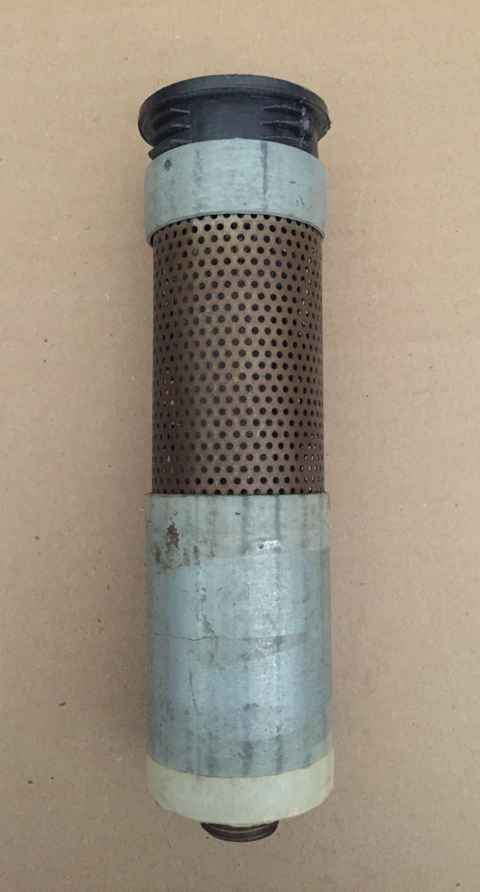
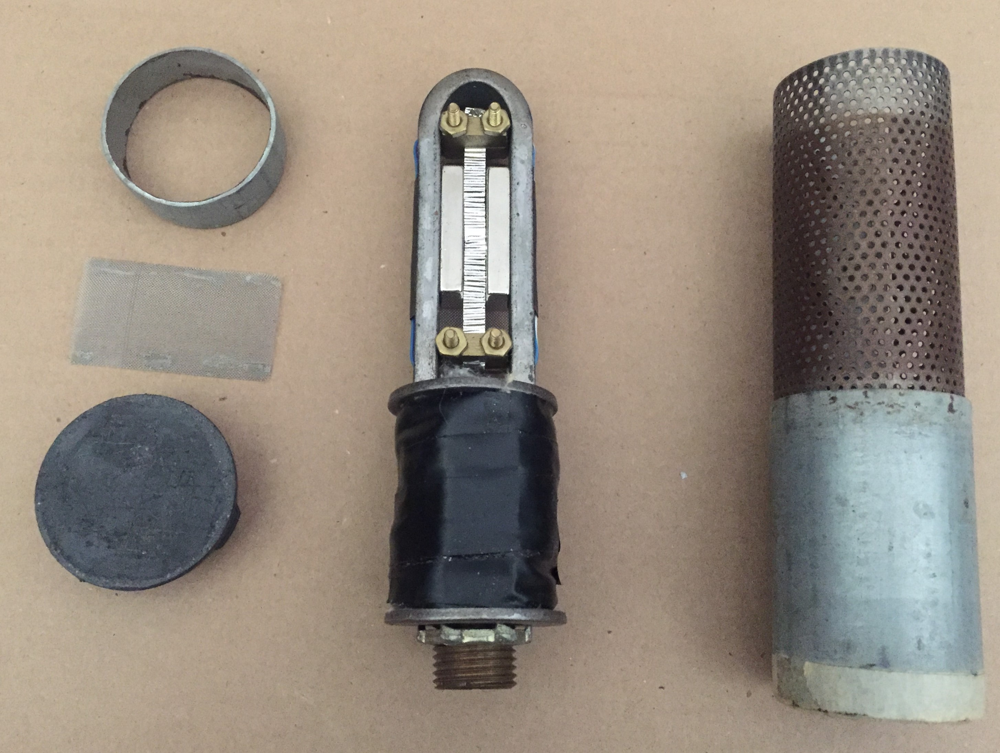
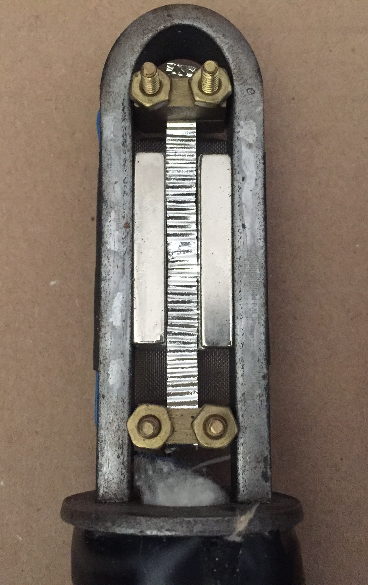

The third Newman: Caulk Newman
This is where I thought I was getting pretty sophisticated. This one is from mid 2008 if I remember correctly. I made it just to test out the fancy Lundahl ribbon mic transformer my brother got me for Christmas. Initially after I made the transducer and frame, I noticed it fit well inside a caulking gun, hence the name Caulk Newman. This one is mostly scrap steel, still featuring my signature brazing rod XLR jack, and stuffed with cotton because I read they do that at Royer.
Here it is. In the middle you see the transducer and frame -- under all that electrical tape is a bunch of cotton and the transformer. I did this because I really didn't want that transformer to move around and I really didn't want to make a proper mounting bracket for it. This part, along with the perforated metal cylinder is what originally got loaded into the caulking gun.
Here is a close up of the transducer. Finally moved on to Neodymium magnets with a proper closed magnetic circuit. The ribbon is pretty beat up looking here -- this one has been through some abuse.

Here again is my silly brazing rod XLR.